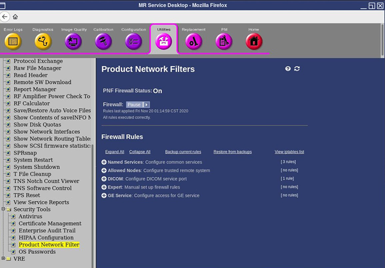

- 00000018WIA30D9B6B0GYZ
- id_20446191.12
- Jul 28, 2025 5:16:22 PM
Doing a check of the cyber security compliance
Examine the cyber security compliance, including software version compliance, default password replacement, antivirus and firewall status, and product disk encryption.
These steps are used to determine the system software cyber compliance status of MR systems across all software versions.
Examining the software version compliance
Refer to the MR Service Pack Software Matrix (DOC1667089), available from the online documentation library, and make sure that the site is running the correct software version for its product type.
Making sure that the system is not using the default password
If the system is running software version 29.0 or later, then the password was changed from the default password during the install. No action is required.
- sdc
- insite
- root
- Open a C Shell or terminal window, and log on as sdc with the default password:
- su sdc
- <password>
- Open a C Shell or terminal window, and log on as insite with the default password:
- su insite
- <password>
- Open a C Shell or terminal window, and log on as root with the default password:
- su root
- <password>
Examining the antivirus status
- Check the system option key to determine whether the site has the antivirus option key installed.
- Open a C Shell or terminal window.
- Type sok_test | grep -i antivirus and press Enter.
Note If the output shows the antivirus option installed, then the antivirus is installed on the system. - If the antivirus is installed, make sure that it has all the latest updates. See Installing antivirus software.
- If the antivirus option key is not found, then the site has not purchased the antivirus option.
Examining the firewall status
If the system is running software version 29.0 or later, the Product Network Filter (PNF) should always be set to On by default, unless the customer manually changes it after every restart.
If the system is running software version 28 or earlier, the customer may have turned Off the firewall post install.
- Go to Service Desktop and invoke Common Service Desktop from Service Desktop Manager.
- Go to .
- From the Product Network Filters screen, you can determine whether the firewall is turned On or Off.
Figure 1. Product Network Filters screen 
Note If the customer turned Off the firewall, discuss the reason with them and communicate that this recommendation is for improved cyber security. See Product Network Filter (PNF) firewall to set filters that restrict which system services are allowed to be connected to the Operator console. - If the firewall is turned Off, turn it On.Note Make sure with the customer after turning on the firewall that there are no connectivity issues with additional connected hosts or research laptops.
Examining the product disk encryption
If the system is running software version 27 or earlier, neither the system disk nor the image disk is encrypted.
If the system is running software version 28.0 or later, both the system disk and the image disk are encrypted using Linux Unified Key Setup (LUKS) encryption.